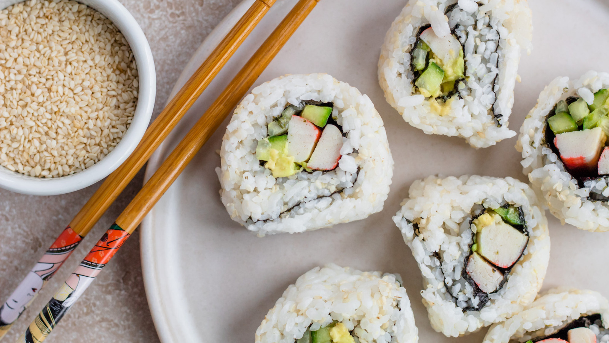

California Roll

Description
Just getting into sushi? California rolls are the perfect place to start. No raw fish is required—just imitation crab, which is typical for this type of roll. All you need is a sushi mat and you're ready to roll!
Ingredients
- 1 cup sushi rice
- 1 1/2 tbsp. rice vinegar
- 1 tbsp. granulated sugar
- 1 1/2 tsp. kosher salt
- 1 cup water
- 4 sheets nori
- 1 hot house cucumber, seeded and thinly sliced into long strips
- 1 small avocado, thinly sliced
- 4 sticks imitation crab meat, sliced in half lengthwise
- 3 tbsp. toasted sesame seeds
- Soy sauce, for serving
Steps
- Wash rice several times in large bowl with cold water until water runs almost clear. Drain rice very well.
- In a small bowl, whisk together vinegar, sugar, and salt until sugar is dissolved. Reserve until ready to use.
- In a medium sauce pan over medium-high heat, add rice and 1 cup water, cover, and bring to a boil. Reduce heat to low and let simmer, covered, about 30 minutes or until water is absorbed. Remove from heat and let stand, covered, for 10 minutes.
- Transfer rice to a large, non-metallic, flat-bottomed bowl. Using a plastic spatula, repeatedly slice through rice at a sharp angle to break up lumps and separate grains while very gradually pouring in vinegar mixture. Cover seasoned rice with a damp cloth until ready to use.
- Place one nori sheet, shiny-side down, lengthwise across a clean, dry cutting board. Dip fingers of one hand into a bowl of water and shake off excess. Pick up one-fourth of the rice and place across the center of the nori sheet. Spread rice evenly across the nori, leaving a 1” strip of nori on the top side uncovered.
- Place bamboo mat on top of rice and with the help of your cutting board, flip it, so that the nori is facing you. Place one-fourth of the cucumber, the avocado, and and the crab in an even row across center of nori, making sure the filling extends to both ends of the surface lengthwise.
- Starting with edge closest to you, pick up mat using thumb and index fingers of both hands; use remaining fingers to hold the filling in place as you roll mat forward and away from you. Roll forward, pressing gently but firmly.
- Working quickly, repeat to make a total of four rolls. Roll each in sesame seeds and slice into 8 pieces. Serve immediately with soy sauce.
Home